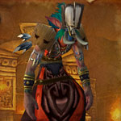
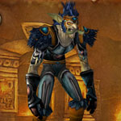

You can find the Zul’Farrak dungeon within Tanaris, Kalimdor.
The coordinates are (39.1,21.7)

Route:
Map 1
For boss 4 go up big stairs & open cages to free prisoners. Fight down the steps until bosses appear. When it’s over speak to Goblin who blows the door. If you want speak with Sergeant Bly to start a fight.

To summon Gahz’rilla hit the Gong of Zul’Farrak located next to the pool.
Bosses:
1. Theka the Martyr2.Antu'sul3.Witch Doctor Zum'rah4.Nekrum & Sezz'ziz5.Hydromancer Velratha6.Gahz'rilla7. Chief Ukorz Sandscalp
Quick Boss Tactics:
/i Careful of using aoe by all the Scarabs. Interrupt Fevered Plague. At 30% transforms making him immune to physical & shadow damage.
/i Careful of using aoe by all the Scarabs. Interrupt Fevered Plague. At 30% transforms making him immune to physical & shadow damage.
Quick Boss Tactics:
/i Kill the Sul’lithuz Broodling adds first. Kill the Greater Healing Ward & Earthgrab Totems. Boss uses variety of shaman spells. At 75% & 25% summons servants to fight, kill them quickly.
/i Kill the Sul’lithuz Broodling adds first. Kill the Greater Healing Ward & Earthgrab Totems. Boss uses variety of shaman spells. At 75% & 25% summons servants to fight, kill them quickly.

Quick Boss Tactics:/i Raises zombies from nearby graves. Kill the Ward of Zum’rah totem before it summons adds. Can interrupt Healing Wave, Shadow Bolt & Shadow Bolt Volley.

Quick Boss Tactics:/i The prisoners help you fight the trolls & bosses. Nekrum: Interrupt Fevered Plague. Sezz’ziz: Can interrupt Shadow Bolt, Renew & Heal. Psychic Scream causes nearby players to flee.
Quick Boss Tactics:
/i Patrols around. Interrupt Healing Wave & Water Bolt. Avoid the blue wave (frontal cone).
/i Patrols around. Interrupt Healing Wave & Water Bolt. Avoid the blue wave (frontal cone).
Quick Boss Tactics:
/i Shoots Icicle which slows players movement speed. Freezes players with Freeze Solid. Move away from his slam.
/i Shoots Icicle which slows players movement speed. Freezes players with Freeze Solid. Move away from his slam.
Quick Boss Tactics:
/i Boss fights with Ruuzlu. Inflicts physical damage to players in front & nearest targets. Frenzy increases his attack speed by 60%.
/i Boss fights with Ruuzlu. Inflicts physical damage to players in front & nearest targets. Frenzy increases his attack speed by 60%.